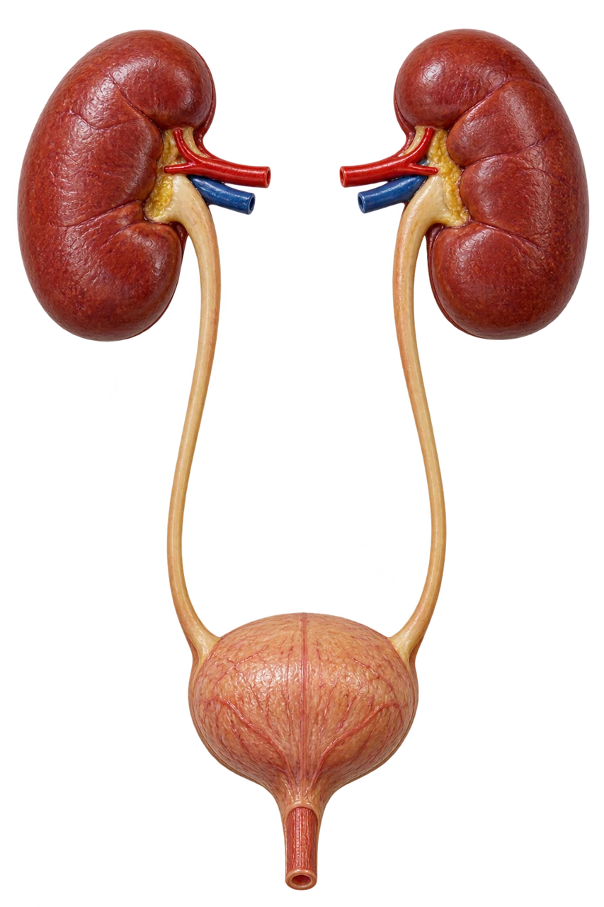

MEDLEX / CROWN GOLD
Urinary system
Interactive lesson20 slides · explore, recall, explain
 MedLexTHE LANGUAGE OF MEDICINE
MedLexTHE LANGUAGE OF MEDICINE Healthcare Crown Academy
Healthcare Crown AcademyMEDLEX / BATCH 03
Urinary
system
Learn the words, trace the relationships and explain the clinical meaning with precision.
20 slidesExplore · recall · applyCrown Gold

01 / EXPLORE & APPLY
Frequent visits—or more urine?
Hook • commit to an answer before revealing
but only a little each time.”
Does this prove polyuria ?
Reveal the distinction
No. Urinary frequency describes how often someone voids. Polyuria describes excessive total urine volume. Small frequent voids do not establish polyuria.
A precise term depends on the feature being described: amount, timing, discomfort or emptying.
SOURCESNLM / Medical word partsNIH / The urinary tract & how it works
02 / EXPLORE & APPLY
Your route through the lesson
Locate → decode → distinguish → apply
01 • Locate
Trace urine from the kidneys to the outside and name the main nephron processes.
02 • Decode
Use roots and suffixes to explain urinary terms in plain language.
03 • Distinguish
Separate symptoms, findings, diseases and procedures.
04 • Apply
Interpret brief records, expand abbreviations and explain your terminology choice.
Colour key: coral = prefix; teal = root or combining form; violet = suffix. Colour is reinforced by written labels.
SOURCESNLM / Medical word partsNIH / The urinary tract & how it works
03 / EXPLORE & APPLY
The urinary atlas
Choose a structure • trace the route of urine
Source desk
NLM • MedlinePlus / Medical word parts ↗SOURCESNLM / Medical word partsNIH / The urinary tract & how it works
04 / EXPLORE & APPLY
The nephron: three useful actions
The functional unit of the kidney
01 · Filtration Blood → filtrate
02 · Reabsorption Tubule → blood
03 · Secretion Blood → tubule
Glomerulus
A capillary tuft where fluid and small solutes are filtered into the renal corpuscle’s capsular space.
Renal tubule
Adjusts the filtrate through reabsorption and secretion. Remaining fluid eventually becomes urine.
Kidneys also regulate electrolytes, acid–base balance and blood pressure, and have endocrine roles.
SOURCESNLM / Medical word partsNIH / The urinary tract & how it works
05 / EXPLORE & APPLY
Roots: name the structure
Read the whole combining form
| Combining form | Meaning | Example |
|---|---|---|
| nephr/o; ren/o | Kidney | nephrectomy; renal |
| pyel/o | Renal pelvis | pyelonephritis |
| glomerul/o | Glomerulus | glomerulonephritis |
| cyst/o; vesic/o | Bladder (cyst/o can also mean a sac) | cystoscopy; vesicoureteral |
| ureter/o | Ureter | ureteroscopy |
| urethr/o | Urethra | urethritis |
| ur/o; urin/o | Urine / urinary tract | urology; urinary |
Renal and nephric both refer to the kidney. Do not substitute ureter/o for urethr/o.
SOURCESNLM / Medical word partsNIH / The urinary tract & how it works
06 / EXPLORE & APPLY
Suffixes and prefixes
Think first • click or tap to flip
SOURCESNLM / Medical word partsNIH / The urinary tract & how it works
07 / EXPLORE & APPLY
Word laboratory
Build a term, then explain its accepted meaning
CONTEXT
Cystitis describes inflammation; the term alone does not prove a bacterial infection. Surgery names do not specify the indication or technique.
SOURCESNLM / Medical word partsNIH / The urinary tract & how it works
08 / EXPLORE & APPLY
Urination vocabulary
Volume, timing and discomfort describe different features
| Term | Plain-language meaning |
|---|---|
| Polyuria | Excessive total urine volume |
| Oliguria | Abnormally low urine output |
| Anuria | Absent or nearly absent urine output |
| Frequency | Voiding more often than usual |
| Nocturia | Waking from sleep to pass urine |
| Dysuria | Pain, burning or discomfort with urination |
Retention = inadequate bladder emptying. Incontinence = involuntary urine leakage. Neither is a synonym for oliguria.
Output thresholds depend on context, age and measurement period; terms alone do not establish a cause.
SOURCESNLM / Medical word partsNIH / The urinary tract & how it works
09 / EXPLORE & APPLY
What is found in the urine?
A finding does not identify the diagnosis
Haematuria / hematuria
Blood in urine. It may be visible or detected microscopically.
Proteinuria / albuminuria
Protein in urine / albumin in urine. Albumin is one type of protein.
Pyuria / bacteriuria
White blood cells in urine / bacteria in urine. Interpret alongside symptoms and sample quality.
Glycosuria / glucosuria
Glucose in urine. This finding needs clinical context.
British and American spellings both occur. A positive dipstick “blood” result may need microscopy because it is not specific for intact red cells.
SOURCESNLM / Medical word partsNIH / The urinary tract & how it works
10 / EXPLORE & APPLY
Inflammation and infection
Name the site and distinguish the mechanism
Cystitis
Inflammation of the bladder. Bacterial bladder infection is a common cause; noninfectious causes also exist.
Urethritis
Inflammation of the urethra. This is a different site from the ureter.
Pyelonephritis
Infection involving the kidney, including the renal pelvis and kidney tissue.
Glomerulonephritis
Inflammatory disease affecting glomeruli. It is distinct from an ascending bacterial UTI.
UTI = urinary tract infection. Specify the site when it is known: bladder infection and kidney infection are different diagnoses.
SOURCESNLM / Medical word partsNIH / The urinary tract & how it works
11 / EXPLORE & APPLY
Stones and obstructed flow
Use the word root to locate the problem
Nephrolithiasis / urolithiasis
Stones in the kidney / stones in the urinary tract. A calculus is a stone; calculi is plural.
Hydronephrosis
Dilatation of the renal collecting system. It may occur with obstruction or reflux and is not itself an infection.
A stone has moved into the ureter. Which term names the site?
Ureterolithiasis. Ureter/o identifies the ureter, whereas urethr/o identifies the urethra.
Renal colic describes a pain syndrome often associated with a stone moving through or obstructing the urinary tract.
SOURCESNLM / Medical word partsNIH / The urinary tract & how it works
12 / EXPLORE & APPLY
AKI, CKD and kidney failure
Timing, function and clinical consequences
Acute kidney injury • AKI
An abrupt decline in kidney function. Urine output may fall, but AKI can occur without oliguria.
Chronic kidney disease • CKD
Abnormal kidney structure or function, with health implications, present for at least 3 months.
Kidney failure
Severe loss of kidney function. It is not a synonym for every stage of CKD.
Azotaemia = raised nitrogenous waste products in blood. Uraemia = a clinical syndrome caused by severe kidney dysfunction; the terms are not interchangeable.
Older records may use “renal failure” or “end-stage renal disease”. Recognise these terms; use precise kidney terminology and context.
SOURCESNLM / Medical word partsNIH / The urinary tract & how it works
13 / EXPLORE & APPLY
Tests: what does each name tell you?
Pair function with evidence of kidney damage
| Test / abbreviation | Meaning and role |
|---|---|
| Urinalysis • UA | Physical, chemical and microscopic assessment of urine |
| Urine culture | Laboratory assessment for microorganisms; interpreted with symptoms and collection quality |
| Serum creatinine | Blood marker used in estimating kidney filtration |
| eGFR | Estimated glomerular filtration rate; commonly reported in mL/min/1.73 m² |
| Urine ACR / UACR | Urine albumin-to-creatinine ratio; a marker of albuminuria |
| Ultrasound / post-void residual • PVR | Imaging / amount of urine left in the bladder after voiding |
eGFR estimates filtration. UACR assesses albumin leakage. They answer related but different questions.
SOURCESNLM / Medical word partsNIH / The urinary tract & how it works
14 / EXPLORE & APPLY
Procedures: scope, remove or drain
The suffix tells you what is being done
| Term | Plain-language meaning |
|---|---|
| Cystoscopy | Scope examination of the urethra and bladder |
| Ureteroscopy | Scope examination of a ureter; may also access the kidney collecting system |
| Nephrectomy | Surgical removal of part or all of a kidney |
| Lithotripsy | Breaking a stone into smaller fragments |
| Nephrostomy | An opening into the kidney collecting system, usually with a tube for drainage |
| Urinary catheterisation | Placement of a tube to drain the bladder |
-ectomy = removal · -scopy = visual examination · -stomy = created opening · -tripsy = crushing
SOURCESNLM / Medical word partsNIH / The urinary tract & how it works
15 / EXPLORE & APPLY
Dialysis and transplantation
Treatment names describe different approaches
Haemodialysis / hemodialysis
Blood passes through an external dialyser to remove wastes and excess fluid.
Peritoneal dialysis
Uses the peritoneal membrane and dialysis fluid in the abdomen for exchange.
Kidney transplantation
Surgical placement of a donor kidney to provide kidney function.
Dialysis supports selected kidney functions; it does not replace every endocrine or metabolic function of a healthy kidney.
Translate for a patient: “haemodialysis”
A treatment that cleans the blood through a filter outside the body. The explanation is more useful than translating the word parts alone.
SOURCESNLM / Medical word partsNIH / The urinary tract & how it works
16 / EXPLORE & APPLY
Clinical language studio
Read → choose a term → justify the choice
A patient voids small amounts frequently and reports burning. Total daily volume is not increased.
Translate the findings
Urinary frequency with dysuria. This is not established polyuria. The findings alone do not confirm the site or cause of infection.
An obstructed kidney is drained through a tube entering its collecting system from the skin.
Name and decode the procedure
Percutaneous nephrostomy. Nephr/o = kidney; -stomy = creation of an opening. It is not nephrectomy, which removes kidney tissue.
SOURCESNLM / Medical word partsNIH / The urinary tract & how it works
17 / EXPLORE & APPLY
Knowledge check
Six questions • one at a time • explanatory feedback
SOURCESNLM / Medical word partsNIH / The urinary tract & how it works
18 / EXPLORE & APPLY
Recall, explain, transfer
Exit task • answer aloud before you reveal
Exit task: distinguish retention from oliguria
Retention concerns incomplete bladder emptying; oliguria concerns low urine production/output. A patient can have retained urine despite poor voiding.
Explain eGFR and UACR in one sentence each. Then decode nephrectomy without using the word “kidney removal” until you have named both word parts.
Revisit five terms tomorrow. Repeat the cases in three days. Re-test your weakest distinction after one week.
SOURCESNLM / Medical word partsNIH / The urinary tract & how it works
19 / EXPLORE & APPLY
References and further reading
Verified public sources • accessed 19 October 2026
Bladder infection in adults: definition & facts ↗
Urinary retention: definition & facts ↗
Bladder control problems: definition & facts ↗
Clinical Practice Guideline for Evaluation and Management of CKD ↗
Acute kidney failure / acute kidney injury ↗
Original lesson wording, schematic diagrams and teaching cases. Generated cover artwork is conceptual. British and American spelling variants are included. KDIGO 2024 supports CKD terminology; this lesson is not a diagnostic or treatment protocol.
Source desk
[1] NLM • MedlinePlus Medical word parts ↗ ↗[2] NIH • NIDDK The urinary tract & how it works ↗ ↗[3] NIH • NIDDK Your kidneys & how they work ↗ ↗[4] NLM • MedlinePlus Urinalysis ↗ ↗[5] NIH • NIDDK Bladder infection in adults: definition & facts ↗ ↗[6] NIH • NIDDK Kidney infection (pyelonephritis) ↗ ↗[7] NIH • NIDDK Kidney stones: definition & facts ↗ ↗[8] NIH • NIDDK Haematuria: blood in urine ↗ ↗[9] NIH • NIDDK Urinary retention: definition & facts ↗ ↗[10] NIH • NIDDK Bladder control problems: definition & facts ↗ ↗[11] NIH • NIDDK CKD tests & diagnosis ↗ ↗[12] KDIGO • 2024 Clinical Practice Guideline for Evaluation and Management of CKD ↗ ↗[13] NIH • NIDDK Cystoscopy & ureteroscopy ↗ ↗[14] NIH • NIDDK Haemodialysis ↗ ↗[15] NLM • MedlinePlus Urination: excessive amount ↗ ↗[16] NLM • MedlinePlus Urine output: decreased ↗ ↗[17] NLM • MedlinePlus Urination: painful ↗ ↗[18] NLM • MedlinePlus Acute kidney failure / acute kidney injury ↗ ↗[19] NLM • MedlinePlus Glomerulonephritis ↗ ↗[20] NLM • MedlinePlus Hydronephrosis of one kidney ↗ ↗[21] NLM • MedlinePlus Azotemia: prerenal ↗ ↗[22] NLM • MedlinePlus Urine culture ↗ ↗[23] NLM • MedlinePlus Percutaneous kidney procedures ↗ ↗[24] NIH • NIDDK Peritoneal dialysis ↗ ↗[25] NIH • NIDDK Kidney transplant ↗ ↗ARTWORK & ATTRIBUTION
Teaching imagery combines generated raster artwork and symbols from the supplied Health Icons asset packs. Models and scenes are conceptual teaching aids. They are not diagnostic diagrams or patient images. Source desks retain attribution to OpenStax, Open RN and the clinical publishers used in the original lessons. No source endorsement is implied.
SOURCESNLM / Medical word partsNIH / The urinary tract & how it works
Explore · recall · explain
01 / 20
ONE ANNOTATION STANDARD
Pointer · interact with the lesson← → Navigate · A Tools · F Focus · Esc Exit
LESSON 05 / 08 · 20 SLIDESNext lesson: Nervous system →